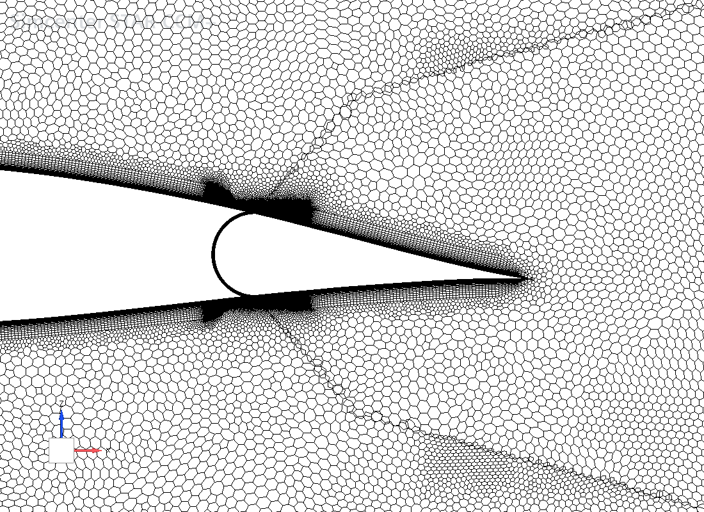

Stan: HOLD — +2° przygotowane, przepływ nieuruchomiony. C0 przyjęte do kinematyki POC. Pełna walidacja ilościowa i energetyczna pozostaje oddzielnym etapem.
STAR 2606 poprawnie odtworzył C0 t = 0.650/iter. 11560 oraz B0 t = 0.500/iter. 6250. Eksporty pól i raporty zgadzają się z historiami. Nie resetowano rozwiązania ani czasu.
| Przypadek | CL średnia25 | CD średnia25 | Mh [Nm] |
|---|---|---|---|
| B0 bez Overset | 0.32661098 | 0.007191107 | −12.16019 |
| C0 z Overset | 0.32561949 | 0.007245937 | −12.04007 |
C/B: CL−0.304%, CD+0.762%. Zgodne fizyka, warunki brzegowe, dt, URF, 40 iteracji i schematy. Wewnątrz kroku residuals istotnie maleją; najgorszy95. percentyl final/first≈1.70·10⁻⁴ (z wyłączeniem składowej Y pędu na poziomie błędu zaokrągleń). Siły i moment mają mały dryf; bilans masy C0≈2.98·10⁻⁹. Brak dawnych niefizycznych pików Cp przy interfejsie. Minimum ciśnienia absolutnego C0≈30.10kPa; zapas nad parowaniem≈27.76kPa>10kPa.
Stare duże różnice sił wiązały się z wykrytymi artefaktami lokalnego Overset oraz niedostateczną zbieżnością przy górnej granicy. Poprawiona konfiguracja usuwa te objawy. Nie przypisano osobnej liczby procentowej każdej przyczynie. Pozostałej różnicy B/C nie używano jako celu dalszego strojenia.

333 939 komórek; 100 kroków; dt = 0.002s; okres 0.2 s; czas zapisany 0.850 s. Ruch sztywny wokół zawiasu x/c = 0.80 na lokalnej linii szkieletowej; oryginalny modified NACA66-012 i szerokość quasi2D zachowane. Przepływ i turbulencja zamrożone przez cały test.
| Błędy Overset / trudna interpolacja | 0 / 0 we wszystkich100 położeniach |
| Akceptory | 1456–1492; każdy z poprawną natywną interpolacją |
| Minimum objętości komórki | 2.12633e-12m³ |
| Minimum CellQuality / FaceValidity | 0.055104 / 1.0 |
| Maksymalny błąd kąta / centroidu klapki | 2.49e-14° / 2.22e-15m |
| Minimalna szczelina w całym zakresie | ≥2.289mm; konserwatywne ograniczenie z geometrii STL |
Łączność sprawdzono w100 położeniach solvera; dodatnia szczelina jest ograniczona także między próbkami. Nie eksportowano osobnej liczby unikalnych donorów.

Animacja spowolniona:3.15s odtwarzania dla0.2s ruchu. Siły z zamrożonego testu nie służą analizie hydrodynamicznej.
Plik .sim z zakończonym POC ruchu
Osobne wczytanie rozwiązania C0 t = 0.650; 10 kroków ustawienia klapki przy zamrożonym przepływie. Końcowo +2°, t = 0.670, iter. 11570, 333 939 komórek. Kontrola pełnej siatki przy każdym położeniu i po zakończeniu:bez błędów Overset i ujemnych objętości. Solvery przepływu/turbulencji odblokowano dopiero do zapisu gotowego przypadku. Nie wykonano obliczeń hydrodynamicznych +2°.
Przygotowany plik +2° — NOT SOLVED
SHA-256: 4f5fd71acc76a75f21fbacdaa8d6e2e0c3b4145d34fd3480b0a19429fbeba22a Rozmiar: 1528117142 bajtów
Zapis natywny i odczyt metadanych zakończone poprawnie. Pola stanowią przybliżony warm start po przemieszczeniu siatki; historia czasowa wymaga kontroli przed analizą sił.
Na nowej kopii przygotowanego +2°:pierwszy ograniczony test do 0.720 s(25 kroków, dt = 0.002, 40 iteracji wewnętrznych), z kontrolą residuals, masy, ciśnienia, turbulencji i Overset. Nie jest to z góry wystarczający czas stabilizacji. Ocena wyników poprzedza dalsze kroki. Żadne kolejne warianty nie są oczekujące.
Różnice siatek i kroku czasowego nie mają jeszcze formalnej oceny niepewności. Dalekie pole zachowuje pamięć rozruchu. Pełna weryfikacja pozostaje wymagana przed analizą energetyczną; fale, surrogate i DRL nieuruchomione.
Jeden istniejący kontroler; limit8 CPU, bez GPU; checkpointy, logi, CSV, makra i historia decyzji zachowane na F:. Kontroler przekazano bez nakładania procesów. solver_state i operation są spójne; czas ruchu oddzielony od czasu rozwiązania przepływu.
Inne kampanie niezmienione. Wykryty odrębny W04 działa w STAR 2602 z innej kolejki; nie został uruchomiony ani zatrzymany w ramach tego zadania.
Raport:2026-11-03T08:57:40.269777+01:00